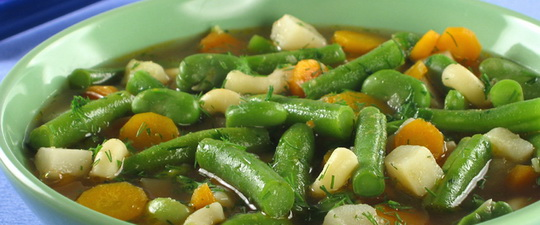

Рецепти
На цій сторінці ви можете знайти рецепт приготування корисного обіду.
Якщо пропустити обід, то організм включає «режим економії енергії». Не можна на довгий час залишати його без їжі, інакше майже все з'їдене буде відкладено про запас, перетвориться в жир. До того ж, якщо не пообідавши, нас починають переслідувати неприємне бурчання в животі, головний біль, знижується працездатність і загальний стан погіршується. Правильний обід - це основа схуднення.
Квасолевий суп квасолі по-грецьки
Кількість калорі: 500
Квасоля потрібно залити водою, довести до кипіння і вилити рідину...
Приготувати

Суп-пюре з помідорів
Кількість калорій: 500
Цей літній супчик буде як не можна, до речі, під час відпусток, коли...
Приготувати
Грибний суп з сочевицею
Кількість калорій: 500
Спочатку замочимо на кілька годин 120 гр. сушених білих грибів...
Приготувати